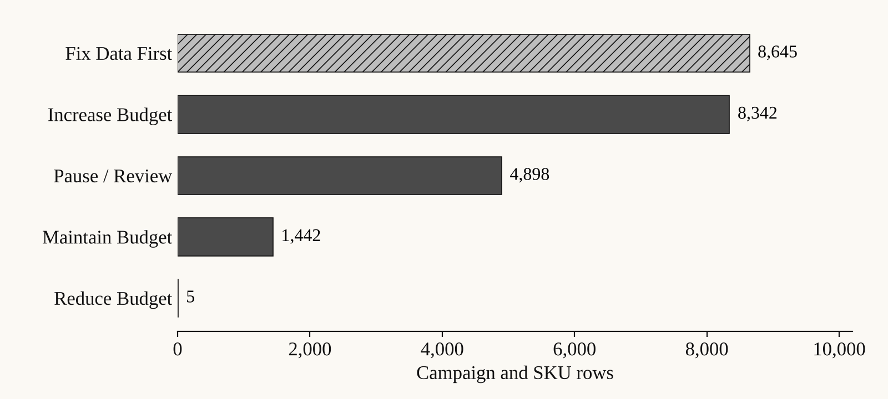

Projects · Marketplace ads · ACoS/TACoS · Budget allocation
eCommerce Marketplace Ads Performance Dashboard
Marketplace ads reporting with ACoS/TACoS KPIs, slow-moving SKU analysis, data quality checks, and budget recommendations.

Context
Marketplace advertising teams often manage separate exports from Amazon Ads, Google Ads, TikTok Ads, and eBay Ads, making it harder to compare spend, revenue, profit, and inventory impact.
Data
Synthetic ad platform exports, marketplace sales, product catalog, and inventory datasets covering 12 months of consumer electronics activity.
Method
I consolidated platform schemas, cleaned SKU and campaign fields, joined product and inventory data, calculated ACoS/TACoS-style KPIs, and built validation checks for reporting quality.
Output
A dashboard-ready ads dataset, Excel performance model, SQL queries, Streamlit dashboard, Power BI build guide, slow-moving product analysis, and budget allocation recommendations.
Findings
The workflow processed 42,360 ad rows and 6,500 sales rows, generated $86.7M in attributed ad revenue, produced a 6.80 average ROAS, and flagged 4,903 campaign/SKU rows for reduction or pause.
Reflection
The strongest part of this project is the operating layer: it does not just show performance, it turns messy marketplace exports into budget actions, data quality fixes, and product-level decisions.
Figures
